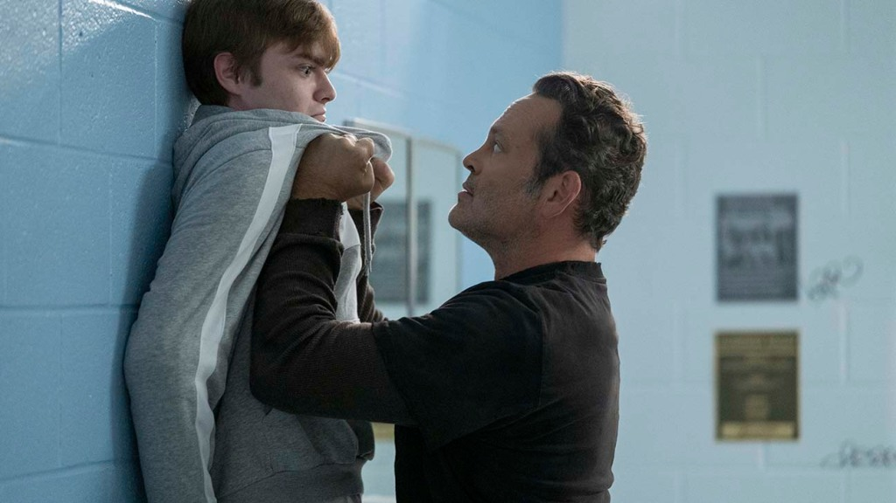
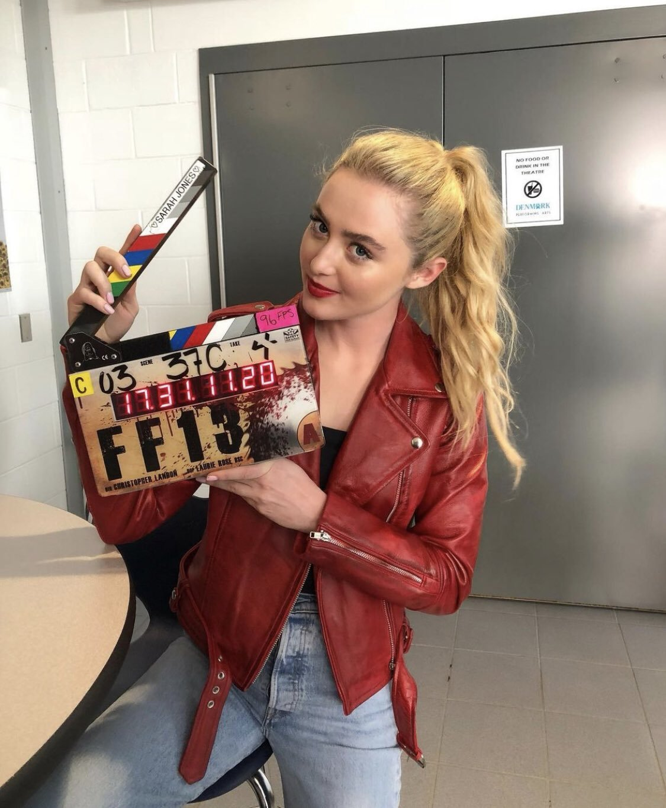
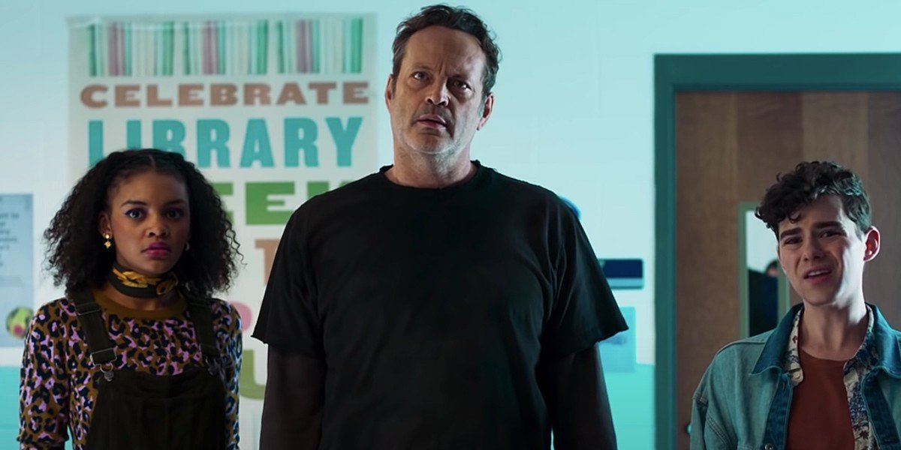

About
Freaky is a 2020 American comedy slasher film directed by Christopher Landon, from a screenplay by Michael Kennedy and Landon, and starring Vince Vaughn, Kathryn Newton, Katie Finneran, Celeste O'Connor, and Alan Ruck. Seventeen-year-old Millie Kessler spends her days trying to survive high school and the cruel actions of the popular crowd. But when she becomes the latest target of the Butcher, the town's infamous serial killer, her senior year becomes the least of her worries. When the Butcher's mystical dagger causes him and Millie to magically switch bodies, the frightened teen learns she has just 24 hours to get her identity back before she looks like a middle-aged maniac forever.
Freaky premiered at Beyond Fest on October 8, 2020, and was theatrically released in the United States on November 13, 2020, and internationally on July 2, 2021, by Universal Pictures. The film received positive reviews from critics, who praised Vaughn and Newton's performances, as well as the blend of horror and comedy.
Production
Screenwriter Michael Kennedy began working on the script, then-titled Killer Body, after watching the film Happy Death Day, and being impressed with the film's ability to cross Groundhog Day with a slasher film. Kennedy began working with Christopher Landon shortly after presenting him an early draft of the script over lunch. In early August 2019, the film was officially announced with Landon directing and Jason Blum serving as a producer under his Blumhouse Productions banner. Specific plot details were not revealed, but the story was described as following a violent figure wreaking havoc in a small town. Freaky is another high-concept comedy horror film directed by Landon after Happy Death Day (2017) and Happy Death Day 2U (2019). It has been compared to various teen slasher movies, including Scream (1996) and Cherry Falls (2000).
Production was expected to begin in October in Atlanta, Georgia, and there was some speculation the film could be a reboot of Scream. However, Landon later debunked those rumors, stating that the project was to be an original story, taking inspiration from Mary Rodgers's Freaky Friday. Principal photography lasted for 35 days, under the original title Freaky Friday the 13th. It began on October 21, 2019, and was completed on December 12, 2019.
Reviews and Reception
Freaky grossed $9 million in the United States and Canada, and $7.2 million in other territories, for a worldwide total of $16.2 million. On review aggregator website Rotten Tomatoes, the film has an approval rating of 83% based on 241 reviews, with an average rating of 6.8/10. The website's critics consensus reads, "An entertaining slasher with a gender-bending, body-swapping twist, this horror-comedy juggles genres with Freaky fun results." On Metacritic, the film has a weighted average score of 67 out of 100 based on 39 critics, indicating "generally favorable reviews." Audiences polled by CinemaScore gave the film an average grade of B− on an A+ to F scale, while PostTrak reported 77% of audience members gave the film a positive score, with 54% saying they would definitely recommend it.
Heather Wixon, of Daily Dead, gave the film 4.5 out of 5, saying that "Freaky is easily one of the best supernatural slashers to come along in this era of modern horror, that perfectly blends together horror, humor, and heart seamlessly." Writing for The Globe and Mail, Barry Hertz gave the film 3 out of 4 stars, and stated, "Landon is not aiming to break new ground here – only to use well-trod territory for his own gag- and gross-out-happy ends. This is candy-coloured mayhem, bright and snappy and enjoyably wince-inducing in its desire to disgust. And just as Vaughn can easily play both male murderer and winsome teen girl, so, too, can the charming Newton ace her required flips." His Name is Death editor Albert Nowicki considered the movie to be an effective slasher but also praised its "well-directed slapstick" and Vaughn's comedic performance. He believed the film celebrates its queerness and noted: "Written by two openly gay screenwriters, Freaky doesn't stigmatize its characters for their otherness—it erects a monument to it."